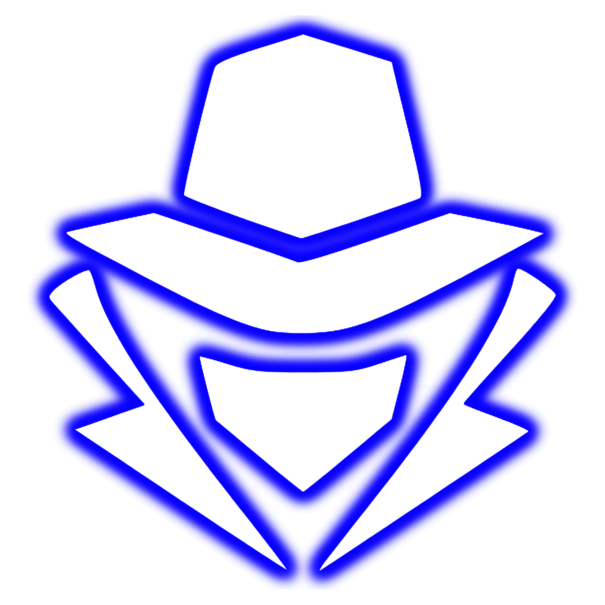
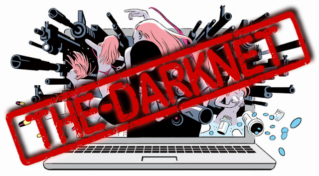

Sejara Singkat - The Dark Net

- Di luar pandangan Google dan Bing, terdapat perbatasan dunia maya yang luas - dengan beberapa perkiraan ratusan kali lebih besar dari World Wide Web. Apa yang disebut "deepweb" ini sering kali lebih membosankan daripada menyeramkan, penuh dengan data dangkal dan URL terlantar, tetapi juga rumah bagi dunia bawah tanah komersial apa saja, yang disebut "darknet," yang akan membuat perut Anda mual. Ini adalah tempat di mana obat-obatan dan senjata diperdagangkan secara terbuka, di mana teroris terhubung, dan di mana pembunuh menawar pembunuhan kontrak. Dalam beberapa tahun terakhir, darknet telah menemukan dirinya dalam perselisihan pemerintah, dengan FBI dan National Security Agency (NSA) menindak pedagang narkoba dan pornografer. Meskipun ada serangkaian patung terkenal, dunia tanpa hukum ini terus bersenandung, jauh di bawah jaring sehari-hari.
- Pada 29 Oktober 1969 Charley Kline, seorang mahasiswa di Universitas California, Los Angeles, mengetikkan pesan pertama antara komputer yang dihubungkan oleh ARPANET, nenek moyang Internet yang dikembangkan oleh Badan Proyek Penelitian Lanjutan Pertahanan Pentagon. (Hanya dua huruf pertama dari pengiriman elektronik, "LOGIN", yang berhasil mencapai komputer di Universitas Stanford.) Hanya dalam beberapa tahun, sejumlah jaringan rahasia yang terisolasi mulai muncul di samping ARPANET. Beberapa akhirnya dikenal sebagai "darknet".
- Di tahun 1980-an Dengan lahirnya web modern, yang bisa dibilang ditandai dengan standardisasi suite protokol Internet tahun 1982, masalah penyimpanan data sensitif atau ilegal tampak besar. Solusi awal melibatkan "tempat berlindung data" fisik - analog informasi surga pajak - di Karibia yang menjanjikan untuk menampung segala sesuatu mulai dari operasi perjudian hingga pornografi ilegal.
- Akhir 1990-an Seiring Internet menjadi arus utama, penurunan biaya penyimpanan ditambah dengan kemajuan dalam kompresi file memicu ledakan aktivitas darknet, saat pengguna mulai berbagi materi berhak cipta. Segera, transmisi data peer-to-peer Internet melahirkan hub data yang terdesentralisasi, beberapa di antaranya, seperti yang disebut situs teratas - tempat sebagian besar file musik dan film ilegal berasal - dilindungi sandi dan hanya diketahui oleh orang dalam. Yang lainnya, seperti Napster, beroperasi secara terbuka dan memfasilitasi jutaan transfer file per hari.
- Pada Bulan Maret Tahun 2000 Pengembang perangkat lunak Ian Clarke merilis Freenet, perangkat lunak revolusioner yang menawarkan jalur anonim ke dalam jangkauan web yang paling gelap, di mana seseorang dapat mengakses segala sesuatu mulai dari pornografi anak hingga instruksi tentang cara membuat bahan peledak. "Freenet adalah anarki yang hampir sempurna," kata Clarke kepada New York Times . "Saya punya dua kata untuk… perusahaan [mencoba menghentikan berbagi file gratis]: Menyerah."
- Di Bulan Juni 2000 Petugas siber Libertarian Ryan Lackey dan Sean Hastings memulai bisnis di Sealand, negara bagian yang secara nominal merdeka terletak di benteng laut era Perang Dunia II di lepas pantai Inggris. Start-up, yang disebut HavenCo, membayangkan hosting data terlarang (kecuali spam, pornografi anak, dan aktivitas pencucian uang) di server berteknologi tinggi berlapis nitrogen yang tersembunyi di kaki benteng. Meskipun menghasilkan banyak perhatian, HavenCo mulai mengucurkan uang segera, dan pada tahun 2002, Lackey dan Hastings telah melompat ke kapal.
- Pada 20 September 2002 Para peneliti di US Naval Research Laboratory merilis versi awal Tor ("The Onion Router"), yang menyembunyikan lokasi dan alamat IP pengguna yang mengunduh perangkat lunak. Awalnya dirancang untuk melindungi identitas operasi dan pembangkang Amerika di negara-negara represif seperti China, Tor juga memiliki konstituen alami lainnya: penghuni darknet.
- Pada Januari 2005 Majalah Wired memperkirakan bahwa "media darknet mendistribusikan lebih dari setengah juta film setiap hari." Didorong oleh bandwidth yang membludak, jaringan bawah tanah meledak menjadi pelanggaran hak cipta grosir, dari film laris Hollywood hingga Microsoft Office. Sebuah studi oleh firma riset IT IDC memperkirakan pembajakan perangkat lunak saja merugikan bisnis $ 34 miliar di seluruh dunia pada tahun 2005.
- Di 3 Januari 2009 Seorang pria yang menyebut dirinya Satoshi Nakamoto "menambang" Bitcoin pertama, suatu bentuk cryptocurrency yang tidak dapat dilacak. Tidak seperti mata uang digital sebelumnya yang gagal karena tidak ada yang mencegah pengguna untuk benar-benar menyalin uang mereka, Bitcoin menggunakan buku besar akuntan publik inovatif yang mencegah pengeluaran ganda. Tidak mengherankan, cryptocurrency menjadi hit instan di darknet, anonimitasnya menjadikannya alat yang sempurna untuk pencucian uang dan aktivitas kriminal.
- Pada 2010 Perusahaan keamanan siber dan intelijen Procysive memperkirakan bahwa darknet adalah rumah bagi "lebih dari 50.000 situs web ekstremis dan lebih dari 300 forum teroris." Penjualan ilegal konten digital bajakan, menurut laporannya, "berfungsi sebagai sumber pembiayaan untuk operasi [teroris]."
- Di 1 Juni 2011 A Gawker -affiliated blog menerbitkan sebuah uraian tentang Silk Road, sebuah pasar tersembunyi yang "membuat pembelian dan penjualan obat-obatan terlarang semudah membeli digunakan elektronik." Ini seperti Amazon.com untuk sabu - sabu dan LSD, kecuali hanya tersedia untuk pengguna Tor dengan akun Bitcoin. Lalu lintas ke Silk Road melonjak, dan nilai Bitcoin melonjak dari sekitar $ 10 menjadi lebih dari $ 30 dalam beberapa hari.
- Pada 1 Agustus 2013 Pihak berwenang Irlandia menggerebek apartemen Eric Eoin Marques di Dublin, yang digambarkan oleh FBI sebagai "fasilitator pornografi anak terbesar di planet ini." Penangkapannya bertepatan dengan penutupan misterius dari darknet, yang diduga sebagai bagian dari operasi FBI yang mengeksploitasi pelanggaran di browser web Firefox untuk mengidentifikasi pengguna Tor. Identitas pengguna dilaporkan dialihkan kembali ke server di Virginia Utara. Di 4 Agustus 2013 Pemerintah AS menyadap komunikasi rahasia antara kepala al Qaeda Ayman al-Zawahiri dan Nasir al-Wuhayshi, kepala Al Qaeda yang berbasis di Yaman di Semenanjung Arab. Perundingan online mengarah pada penutupan kedutaan besar AS di 21 negara di seluruh dunia Muslim. Menurut para peneliti di Institute for National Security Studies di Israel, pembicaraan tingkat tinggi al Qaeda "tampaknya terjadi di bagian internet yang kadang-kadang disebut deepnet, blacknet, atau darknet."
- Di 1 Oktober 2013 FBI menutup Silk Road dan menangkap Ross William Ulbricht, yang dikenal dengan nama daring Dread Pirate Roberts, karena diduga mendalangi operasi tersebut. Situs tersebut menghasilkan lebih dari $ 1,2 miliar dalam penjualan antara 2011 dan 2013, menurut dakwaan yang diajukan di pengadilan federal AS. Pada 4 Oktober 2013 The Guardian melaporkan bahwa NSA telah berulang kali menargetkan orang-orang yang menggunakan Tor dengan mengeksploitasi kerentanan di perangkat lunak lain di komputer mereka. Menurut presentasi internal rahasia tahun 2007 yang dibocorkan oleh mantan kontraktor NSA Edward Snowden, agensi tersebut "tidak akan pernah dapat membatalkan anonim semua pengguna Tor sepanjang waktu," tetapi dengan analisis manual, itu dapat "menghapus anonimitas yang sangat kecil. sebagian kecil dari pengguna Tor."
- Pada Bulan Oktober 2013 Situs berita teknologi , Verge , melaporkan bahwa pasar online seperti Black Market Reloaded dan Deepbay, keduanya secara terbuka mengiklankan narkotika, mengalami lonjakan lalu lintas. "Tidak diragukan lagi kita semua akan berkumpul kembali di tempat lain," tulis seorang moderator Silk Road setelah pasar ditutup. "Saya berharap dapat bertemu dengan Anda semua lagi ... masih terlibat dalam perdagangan bebas tanpa campur tangan pemerintah dalam urusan pribadi Anda." Pada bulan November, pasar darknet anonim baru bernama Silk Road 2.0 kembali online, lebih dari sebulan setelah yang asli ditutup. Sekian & Terimakasih... Wassallamm...